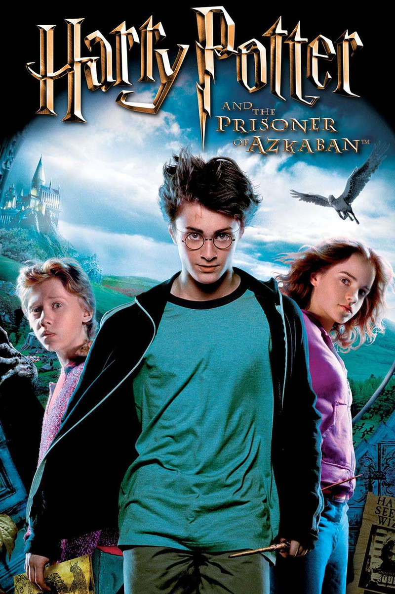

É o início do terceiro ano na escola de bruxaria Hogwarts. Harry, Ron e Hermione têm muito o que aprender. Mas uma ameaça ronda a escola e ela se chama Sirius Black. Após doze anos encarcerado na prisão de Azkaban, ele consegue escapar e volta para vingar seu mestre, Lord Voldemort. Para piorar, os Dementores, guardas supostamente enviados para proteger Hogwarts e seguir os passos de Black, parecem ser ameaças ainda mais perigosas.
Direcionado por: Alfonso Cuarón
